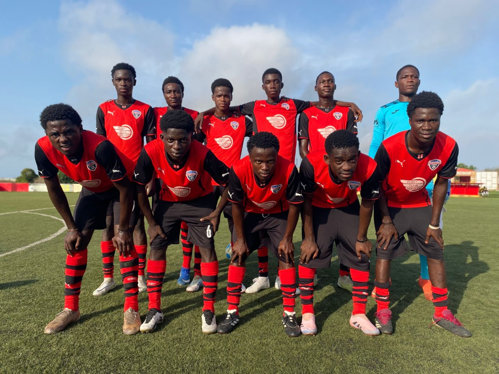
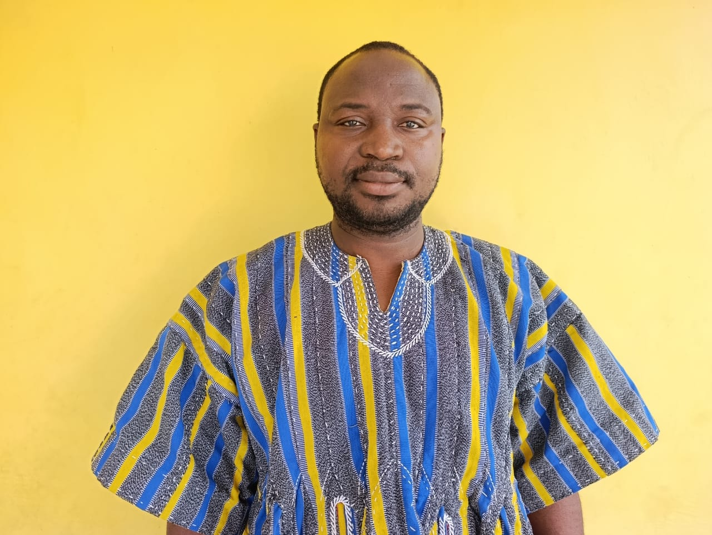
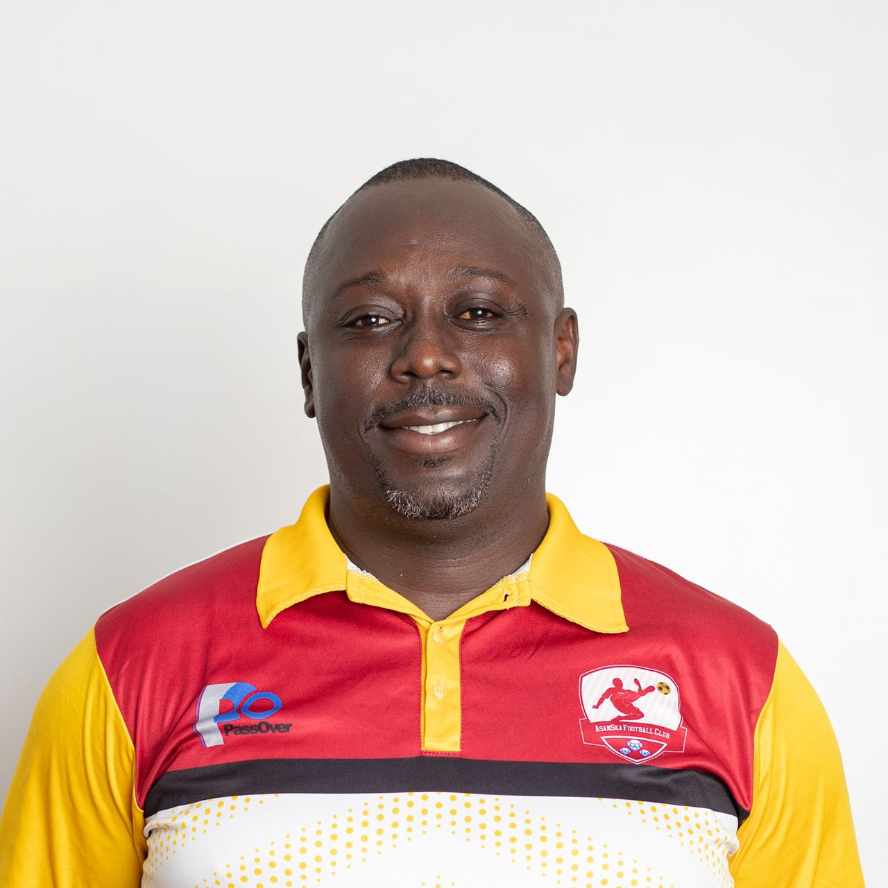
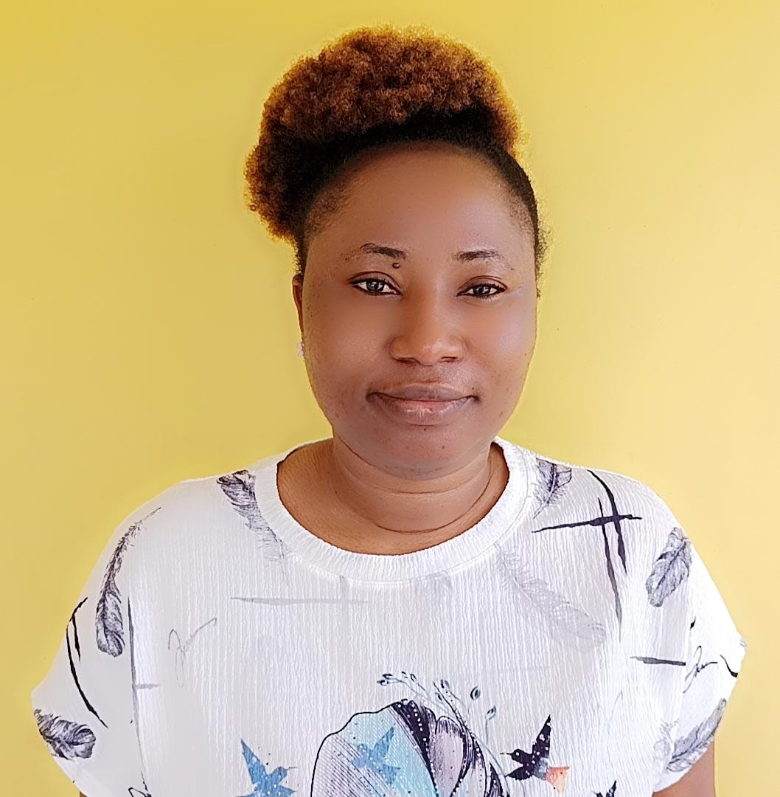
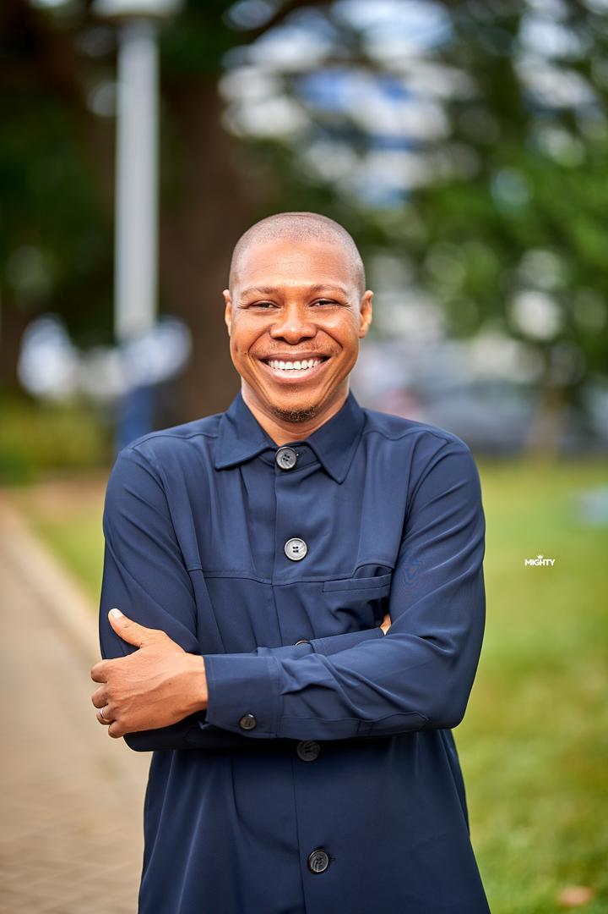

Empowering Young Athletes Through Football, Education and Leadership.

African Child Sports Academy is committed to identifying, nurturing and developing talented young footballers while empowering them through education, leadership and life skills.
We provide a safe and supportive environment where every child has the opportunity to discover their potential, pursue excellence and grow into responsible leaders both on and off the field.
To identify, develop, and elevate talented young footballers across Africa, providing them with the skills, discipline, and opportunities needed to succeed on the global stage.
A future where African children are recognized as some of the best footballers in the world, inspiring generations and promoting sportsmanship, teamwork, and leadership.
Delivering quality coaching, education and player development.
Promoting honesty, discipline, accountability and respect.
Creating pathways for talented young athletes to achieve success.
Our leadership team is committed to empowering young athletes through football, education, mentorship and community development.

Healthcare professional and football administrator dedicated to developing young football talent.

Experienced coach and leadership expert committed to developing football excellence.
Legal and finance professional ensuring strong governance and strategic direction.

A highly experienced marketing professional with over 12 years of expertise in driving innovative marketing strategies.
Award-winning digital media professional leading communication and strategic engagement.

highly accomplished Chartered Accountant, Economist, and Forensic Auditor with over nineteen (19) years of professional experience across the public and private sectors in Ghana.